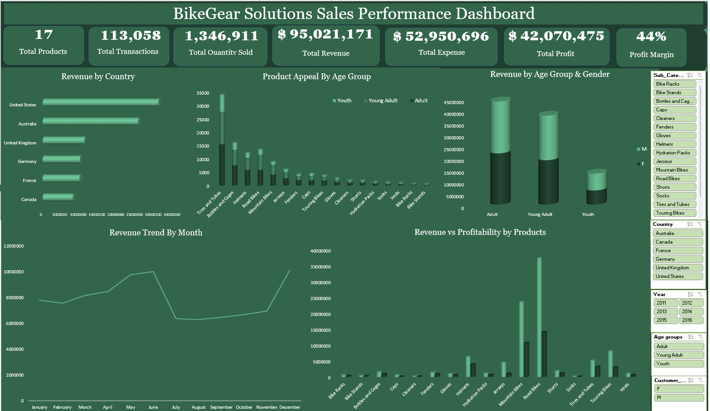
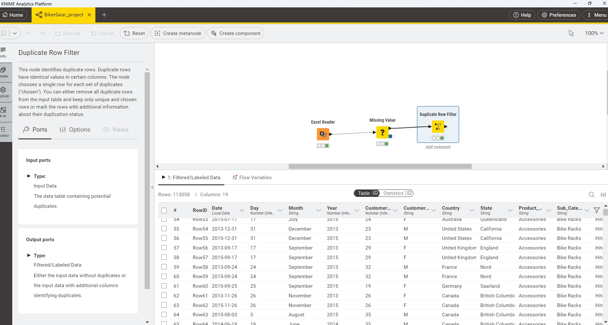
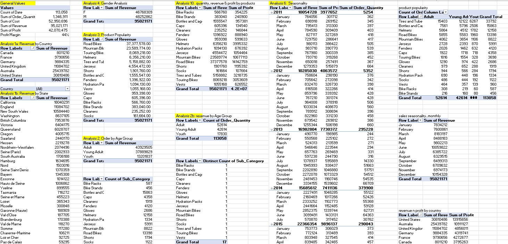
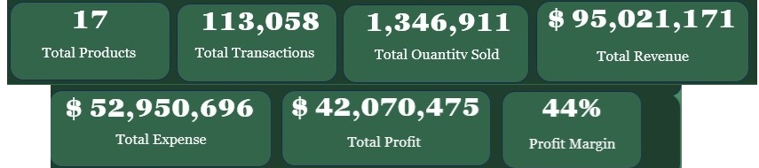
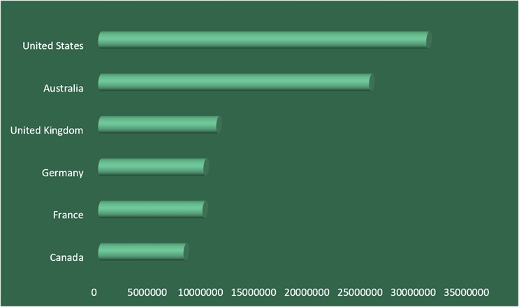
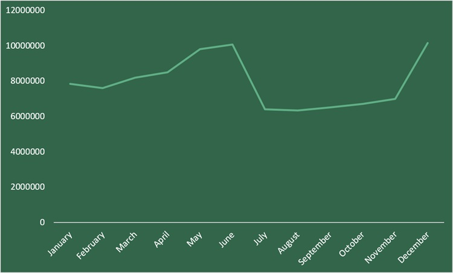
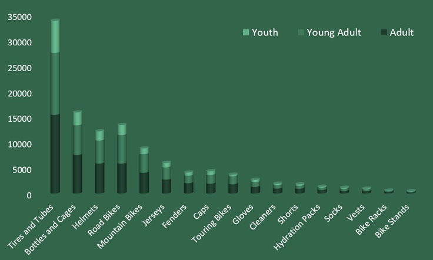
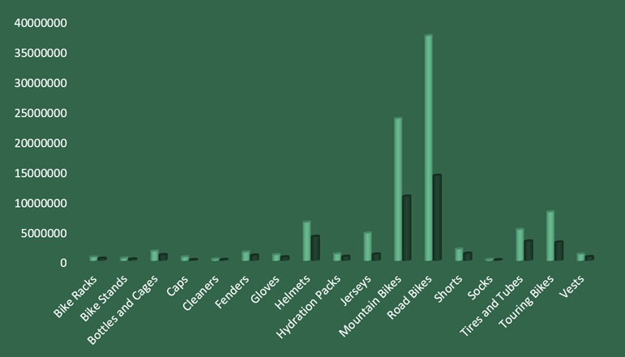
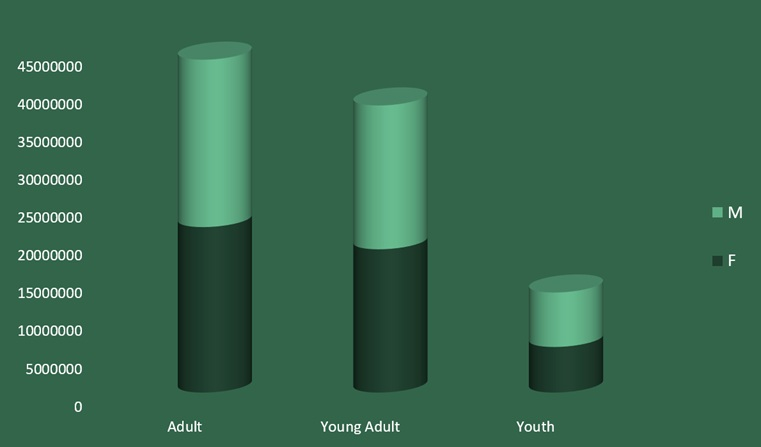

BikeGear Solutions
Sales Performance Analysis
This sales analysis examines BikeGear Solutions' sales performance to identify key
revenue drivers, product performance, customer trends, and growth opportunities.
The insights support strategic decisions in marketing, inventory, and market expansion.

Overview
BikeGear Solutions (Retailer specializing in bike racks and cycling accessories across Canada, U.S., and Australia etc.)
Challenges
- Leadership needs data to refine regional marketing strategies, understand target demographics, manage inventory, and forecast demand.
- Uncertainty around which regions, age groups, and product types are driving sales performance.
- Difficulty anticipating demand cycles, leading to stock issues and missed promotional opportunities.
I defined the project Objectives as
- Analyze regional sales performance.
- Understand customer demographics.
- Identify popular products.
- Evaluate seasonal trends.

Data Collection & Preparation
Bikegear sales transaction data was imported into KNIME to ensure data is clean (no invalid ages, no missing countries, no negative revenue), free from blanks and duplicates. Data such as region, product subcategories, dates, customer demographics, and profit figures was checked for completeness.

Exploratory Data Analysis(EDA)
I made use of pivot tables, charts, and formulas in Excel to analyze trends in revenue, units sold, and profit by geography, age group, and time.
Insight Generation
In order to generate insights that answers the business problems listed below, the follwoing pivot tables were used.
1. Revenue Distribution by Region (BP1)
Visualization: Horizontal Bar Chart
Pivot Table Fields
| Area | Field |
|---|---|
| Rows | Country |
| Values | Sum of Revenue |
Sort: Largest to Smallest Revenue
Insight: Which country generates the most revenue?
2. Product Subcategory Appeal by Age Group
Visualization: Stacked Column Chart
Pivot Table Fields
| Area | Field |
|---|---|
| Rows | Subcategory |
| Columns | Age Group |
| Values | Count of Orders |
Insight: Which age group buys each product?
3. Customer Segment Analysis
Visualization: Stacked Bar Chart
Revenue by Age Group & Gender
Pivot Table Fields
| Area | Field |
|---|---|
| Rows | Age Group |
| Columns | Gender |
| values | Sum of Revenue |
Which gender-age combination generates the most sales?
4. Sales Seasonality (BP4)
Visualization: Line Chart
Monthly Revenue Trend
Pivot Table Fields
| Area | Field |
|---|---|
| Rows | Month |
| values | Sum of Revenue |
Sort Months: January → December
Insight: Peak sales months
5. Revenue vs Profitability by Products
Visualization: Clustered Column
Pivot Table Fields
| Area | Field |
|---|---|
| Rows | Subcategory |
| Values | Sum of Revenue |
| values | Sum of Profit |
Insight: Which products are:
- High Revenue + High Profit
- High Revenue + Low Profit
- Low Revenue + High Profit
Reporting & Visualization
The following visualizations were generated with Findings, Key Findings and Insight generated.
KPI Dashboard

| Findings | BikeGear Solutions generated over $95 million in revenue and $42 million in profit, achieving a strong 44% profit margin. The company sold more than 1.35 million units through over 113,000 transactions, with revenue generated from a portfolio of 17 products. |
| Insights & Explanation | The company's strong revenue, profitability, and profit margin indicate effective pricing and cost management. Customer purchasing patterns suggest opportunities for cross-selling and upselling, while the concentration of sales within a limited number of products highlights both strengths and potential risks within the product portfolio. |
| Key Finding | BikeGear Solutions demonstrates strong overall financial performance, driven by high sales volumes and profitability. However, revenue remains concentrated in a relatively small number of products, creating a dependency that could impact future growth and stability. |
| Business Impact | The business is well-positioned for growth due to its strong financial foundation and healthy profit margins. Expanding successful product lines, increasing bundling and cross-selling initiatives, and diversifying the product portfolio can further increase revenue while reducing reliance on a few top-performing products. |
Revenue Distribution by Region

| Findings | The analysis shows that the United States generated the highest revenue, followed by Australia and the United Kingdom, while Canada contributed a moderate share of revenue. Overall, revenue is concentrated in a few key regions, with some markets significantly underperforming. |
| Insights & Explanation | The strong performance of the United States, Australia, and the United Kingdom indicates high customer adoption and market demand in these regions. Conversely, weaker-performing regions may require additional marketing support and targeted initiatives, as regional differences appear to influence customer purchasing behavior. |
| Key Finding | A small number of regions account for the majority of the company's revenue, highlighting the importance of regional performance and making geographic targeting a critical factor for future growth. |
| Business Impact | The company should prioritize its marketing and sales investments in high-revenue regions to maximize returns while also addressing underperforming markets through region-specific strategies. This approach can drive revenue growth, improve market penetration, and reduce dependence on a limited number of key regions. |
Sales Seasonality

| Findings | The sales analysis reveals a clear seasonal pattern, with sales peaking in May and June and experiencing another strong period in December. In contrast, January and February record the lowest sales, demonstrating significant fluctuations in demand throughout the year. |
| Insights & Explanation | The increase in sales during spring and summer is driven by higher cycling activity, while strong December performance is likely influenced by holiday shopping and promotional campaigns. These seasonal trends directly affect inventory requirements and operational planning. |
| Key Finding | Sales are highly seasonal, with demand concentrated in specific periods of the year. This makes proactive forecasting and inventory planning essential to meeting customer demand and maximizing sales opportunities. |
| Business Impact | Understanding seasonal demand patterns enables the company to optimize inventory levels, improve product availability during peak periods, and reduce stock-related issues during slower months. Effective seasonal planning can increase sales, improve customer satisfaction, and enhance overall profitability. |
Product Popularity

| Findings | The analysis shows that Adults generate the highest demand across nearly all product categories, with Young Adults representing the second-largest customer segment. Tires & Tubes, Bottles & Cages, Helmets, and Road Bikes are the most popular products, indicating strong demand for both cycling essentials and performance-related products. |
| Insights & Explanation | Adults are the primary market for both bikes and accessories, making them the most valuable customer segment. Young Adults also represent a significant growth opportunity, while essential accessories such as Tires & Tubes, Bottles & Cages, and Helmets demonstrate broad appeal across all age groups, supporting consistent sales performance. |
| Key Finding | Adults and Young Adults are the company's primary buyers, accounting for the majority of product demand. Additionally, Tires & Tubes, Bottles & Cages, Helmets, and Road Bikes are the most attractive products across customer segments, making them key drivers of sales and customer engagement. |
| Business Impact | Understanding which products appeal most to each age group enables the company to optimize product positioning, marketing campaigns, and promotional offers. By targeting Adults and Young Adults with their preferred products and bundling high-demand accessories with bike purchases, the business can increase sales, improve customer satisfaction, and maximize marketing return on investment. |
Revenue vs Profitability

| Findings | The analysis reveals that revenue and profitability do not always move together, as some high-selling products generate relatively lower profit margins while certain lower-volume products deliver strong profitability. Profitability varies significantly across product categories, highlighting differences in pricing, costs, and margins. |
| Insights & Explanation | Focusing solely on revenue can provide an incomplete view of business performance because high sales volumes do not necessarily translate into high profits. A profitability-focused analysis helps identify the products that contribute the most value to the business and supports more informed inventory, pricing, and investment decisions. |
| Key Finding | The highest-selling products are not always the most profitable. Products with stronger margins may contribute more to overall business success than products that simply generate high sales volumes. |
| Business Impact | Prioritizing high-margin products can improve overall profitability and maximize return on investment. By incorporating profitability metrics into pricing, inventory planning, and product portfolio decisions, the company can allocate resources more effectively and drive sustainable financial growth. |
Customer Segment Analysis

| Findings | The analysis shows that Adults generate the highest revenue, followed by Young Adults, while the Youth segment contributes the least revenue. Revenue is concentrated within a few key age and gender groups, indicating that certain demographic segments have a stronger impact on overall sales than others. |
| Insights & Explanation | The results suggest that customer preferences and purchasing behavior vary across age and gender groups. Demographic segmentation helps identify high-value customer segments and reveals opportunities to improve engagement with under-targeted groups through more personalized marketing approaches. |
| Key Finding | A small number of age and gender segments, particularly Adults and Young Adults, drive the majority of revenue, demonstrating that targeted age- and gender-based marketing can significantly improve sales performance and conversion rates. |
| Business Impact | Leveraging demographic insights to create personalized campaigns and align products with customer preferences can increase customer engagement, acquisition, and revenue growth. Focusing marketing efforts on high-performing segments while developing strategies to grow underperforming groups can further strengthen business performance. |
Final Recommendations
Regional Expansion & Product Portfolio Optimization
Leverage demographic and regional insights to improve market penetration and profitability. Focus marketing investments on high-performing regions such as the United States, Australia, and the United Kingdom, while reviewing underperforming regions and product categories to identify improvement opportunities. Additionally, reassess products with high sales volumes but low profit margins and promote high-margin products through strategic bundling and cross-selling initiatives.
Expected Outcome:
- Higher revenue growth
- Improved profitability
- Better allocation of marketing resources
Customer Targeting & Personalization
Implement personalized marketing campaigns based on customer demographics and purchasing behavior. Prioritize Adults (35+) and Young Adults (25–35), as they represent the largest and most valuable customer segments. Develop targeted promotions and engagement strategies, particularly for younger customers, to increase market penetration and customer retention.
Expected Outcome:
- Higher marketing ROI
- Increased conversion rates
- Improved customer lifetime value
Inventory Optimization
Align inventory management with product demand patterns by prioritizing high-demand categories. Maintain adequate stock levels for top-performing products such as Road Bikes, Mountain Bikes, Touring Bikes, and popular accessories to reduce stockouts and ensure product availability during peak demand periods.
Expected Outcome:
- Reduced stock shortages
- Improved operational efficiency
- Enhanced customer satisfaction
Seasonal Planning & Demand Forecasting
Adopt a proactive approach to seasonal demand management by implementing forecasting models and inventory build-up plans. Increase inventory levels ahead of peak sales periods, particularly during March–April and October–November, and launch promotional campaigns one to two months before the Spring/Summer cycling season and Holiday shopping period.
Expected Outcome:
- Improved demand fulfillment
- Increased peak-season sales
- More efficient inventory management
Overall Strategic Recommendation
BikeGear Solutions should focus on expanding high-performing markets, targeting its most profitable customer segments, optimizing inventory around top-selling products, and strengthening seasonal planning processes. These initiatives will help drive sustainable revenue growth, improve profitability, and enhance overall business performance.
- © Untitled
- Design: HTML5 UP